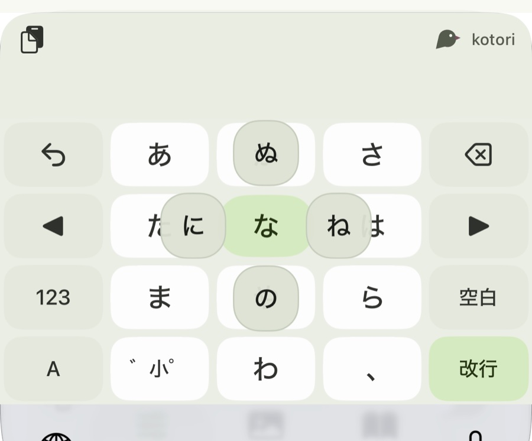
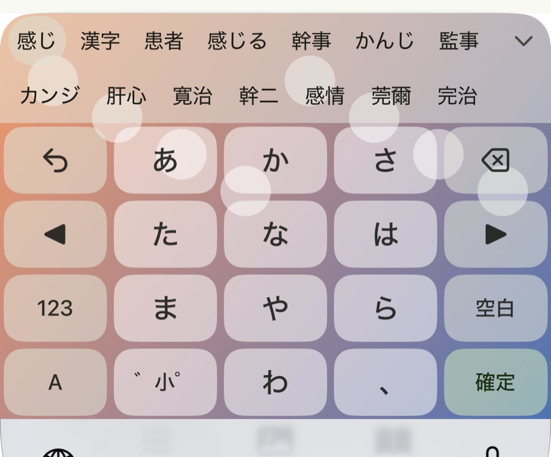
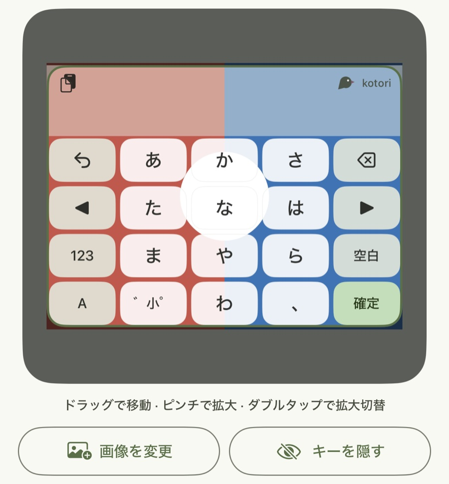

ことばを、
軽やかに。
Kotori は、フリックで打つ日本語キーボードです。変換はすべて端末の中で行い、打ったことばを外へ送りません。
右のキーを、押したまま上下左右へすべらせてみてください。
ここで、打ち心地を試してみて。
ここで試せるのはフリックだけです。かな漢字変換はアプリの中で動きます。
指をすべらせて、一文字。
キーを押したまま上下左右へ指をすべらせると、その行の文字が打てます。押しているあいだ、まわりに行き先が見えます。
- 濁音・半濁音・拗音まで、一度のフリックで打てる拡張フリック
- フリックの広がりと、長押しの時間を好みに合わせられます
- かな、英字、数字、記号、絵文字の配列

変換は、端末の中だけで。
かな漢字変換の辞書も、文脈を見て候補を選び直す「AI 超変換」のモデルも、アプリに入っています。通信を待たずに変換でき、圏外でも変わりません。
- 選んだ候補を覚える学習。設定でオフにでき、覚えた語はひとつずつ消せます
- ユーザー辞書と定型文
- 正字・簡体字での変換

指先に、好きな景色。
キーボードの背景に、写真や色を敷けます。キーの形は 3 種類から選べ、濃さ、すきま、高さ、位置も変えられます。
- 写真、単色、グラデーションの背景
- Expressive、フラット、透明のキー
- 片手で届くように、左右へ寄せて幅を狭められます

打ったことばは、外へ出しません。
キーボードは、パスワード以外のほとんどすべての入力を目にします。だから Kotori は、入力した内容をどこにも送りません。
iOS 版
通信する機能を持っていません。広告、利用状況の分析、クラッシュレポートのためのプログラムも入っていません。「フルアクセスを許可」は、オンにしなくても入力できます。
Android 版
入力した内容は送信しません。送るのは、同意をいただいた場合のクラッシュレポートだけで、設定でいつでも止められます。広告と、利用状況の分析はありません。
学習した語、ユーザー辞書、設定、背景の画像は、端末の中に保存します。パスワードの入力欄では、候補の表示も学習も行いません。
入手
iOS 版
TestFlight でテスト中です。iOS 17 以降の iPhone と iPad で動きます。
Android 版
公開の準備をしています。Android 12 以降で動きます。
どちらも無料です。お問い合わせは support@yuuki14202028.com まで。